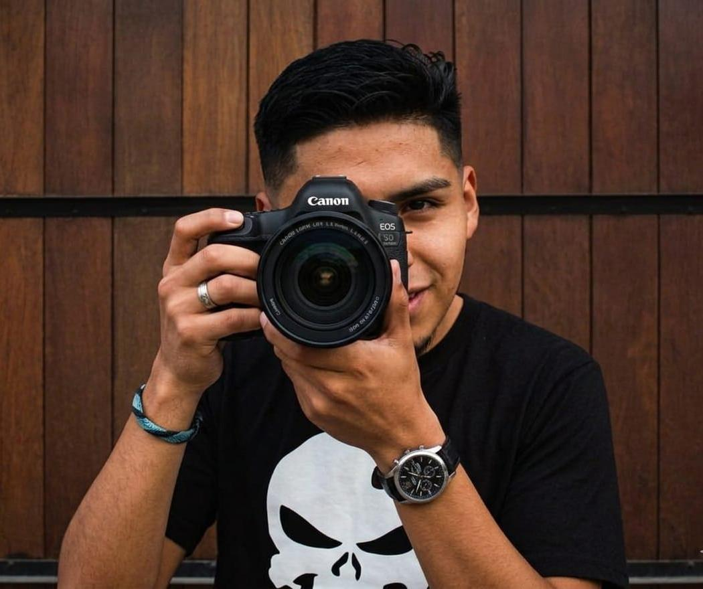

¿Quien soy?
¡Hola! Soy Rodrigo Rocha
Tengo 24 años y soy profesional en ventas y atención al cliente con sólida experiencia como emprendedor y fotógrafo independiente en la cobertura de diversos eventos, más específico para le empresa de animaciones para fiestas Clownsmania. Destaco por mi actitud proactiva, mis habilidades de comunicación efectiva y orientación a resultados, buscando siempre ofrecer un servicio de excelencia y generar valor para mis clientes.
La fotografía es mi forma de expresar la creatividad. Ser capaz de capturar un momento en el tiempo y que ese mismo momento dure toda la vida es lo que me motiva. La fotografía me ha permitido viajar y capturar los hermosos paisajes que el mundo tiene para ofrecer.